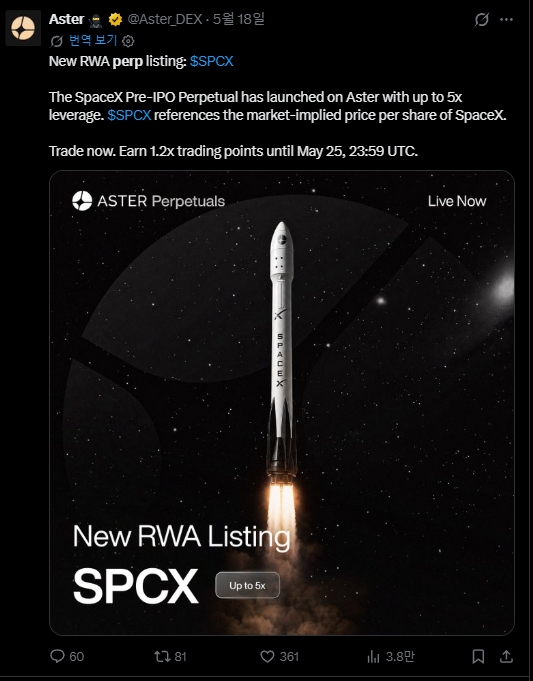

SPCX Pre-IPO Perpetual Trading is Live on Aster
Aster has officially launched the SPCX perpetual market, bringing SpaceX pre-IPO exposure into the growing RWA perp narrative.
The boundary between crypto derivatives and private-company exposure keeps getting thinner. Projects like Aster continue pushing perpetual trading into experimental territory.

Why Traders Are Watching SPCX
SPCX is designed to reference the market-implied pre-IPO share value of SpaceX through a synthetic perpetual market structure.
Instead of waiting for traditional public-market access, traders can speculate on price movement directly through perpetual trading infrastructure.
The Rise of Synthetic Pre-IPO Markets
Crypto derivatives are evolving far beyond traditional token trading. SPCX represents another step toward synthetic exposure to private companies inside decentralized trading ecosystems.
As interest in RWA perpetual markets grows, platforms like Aster are experimenting with entirely new forms of market access.